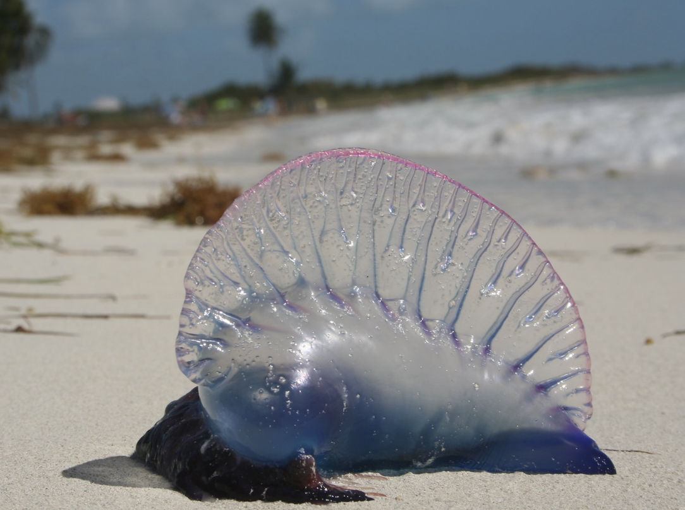
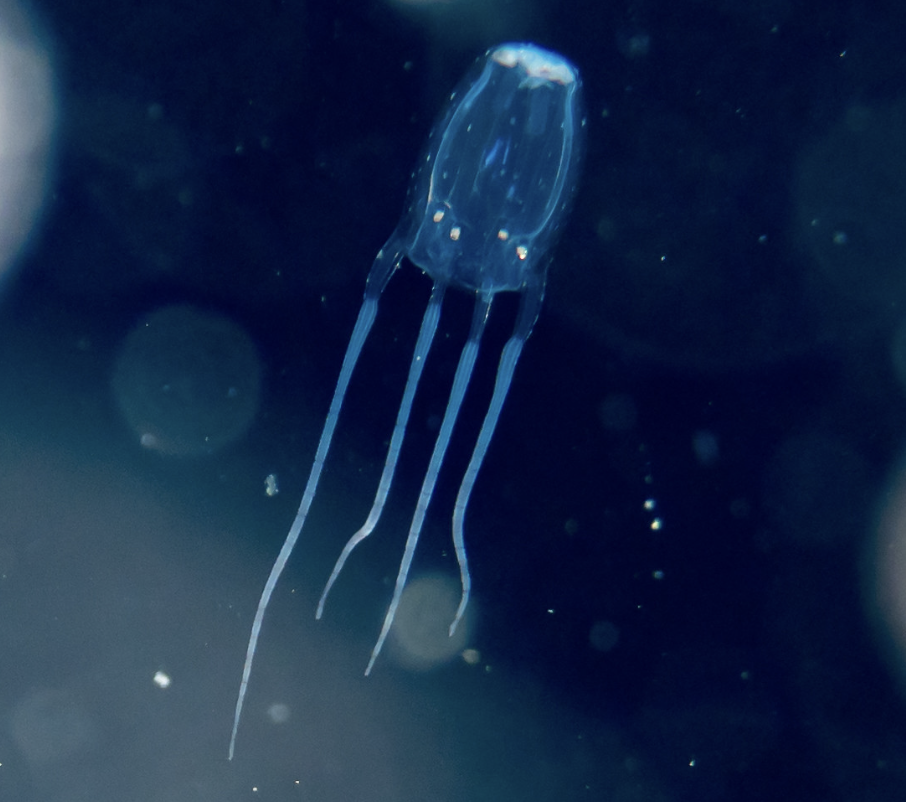
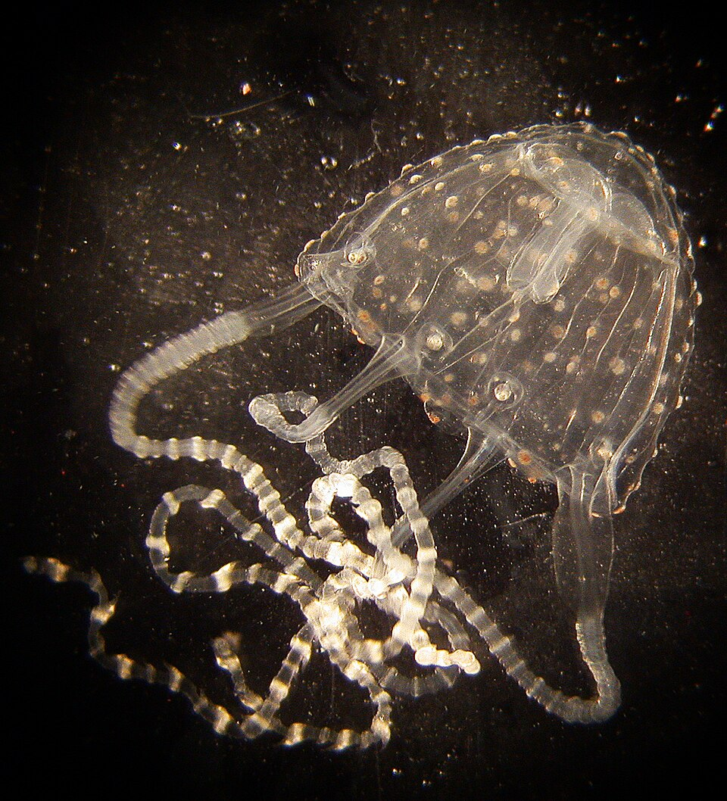

There is a low chance you may across some of these Jellyfish, but never zero.

Simply known as Man O' War or bluebottle, it is not a jellyfish but a siphonophore. Despite that it still has similar characteristics of a jellyfish with tentacles, stingers, and a clear body. While stings are not always fatal they can cause a lot pain from giving severe dermatitis.

Known as the most dangerous jellyfish in the world. Can kill up to 60 people with their venom as it targets the nervous system and hear. These jellies swim rather than drift along currents to hunt prey. Their vemon targets the nervous system and heart which can cause cardiovascular instability and lead to death. Their stings are painful

Also known as the Barnes' Jellyfish, they are known for being one of the smallest and venomest jellyfish in the ocean. Their venom can give humans Irukandji Syndrome, hence the name, which can lead to bleeding brains and heart failure, stings are mild and can go unoticed and untreated.